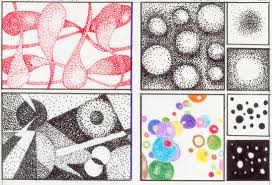

El punto, la línea, la forma y la textura son elementos fundamentales del dibujo que sirven como bloques de construcción visuales; el punto es la unidad mínima, la línea es un punto en movimiento, la forma es el contorno o silueta creada por ellas, y la textura es la cualidad visual (o táctil) de una superficie, permitiendo crear volumen, profundidad y realismo en una obra artística.
